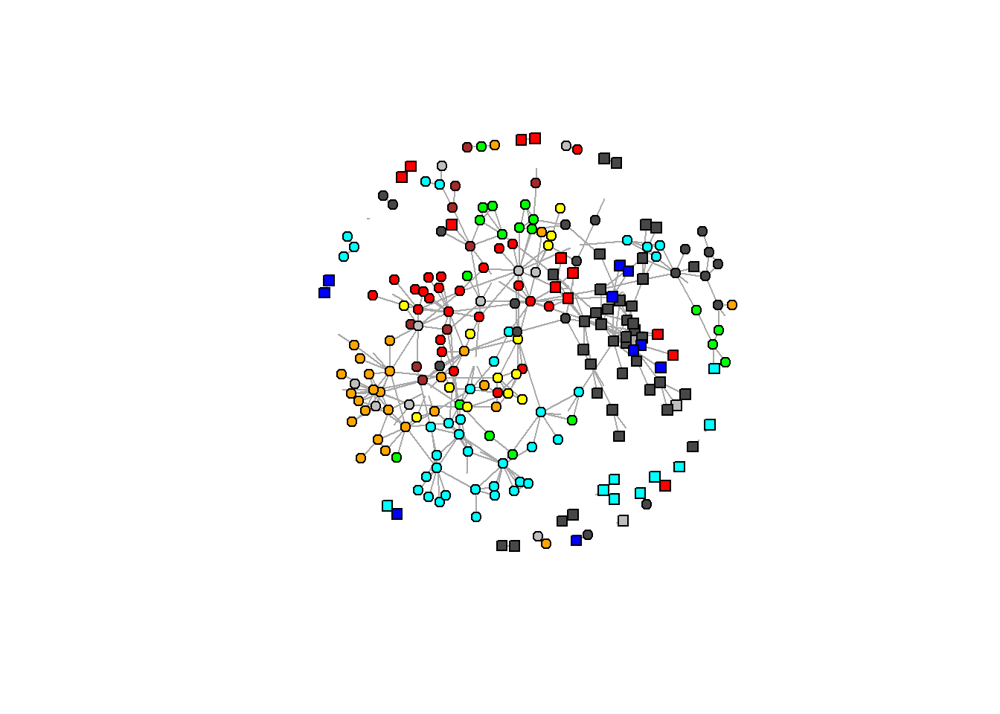
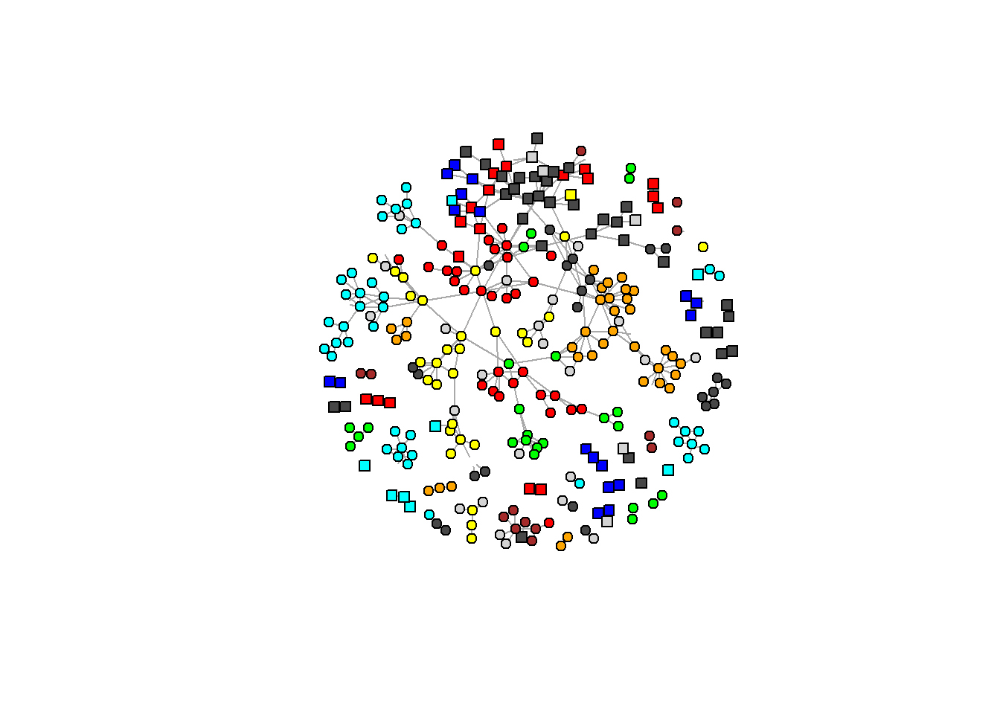
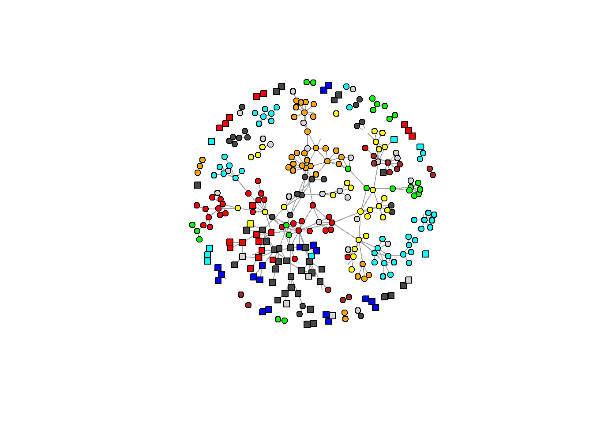
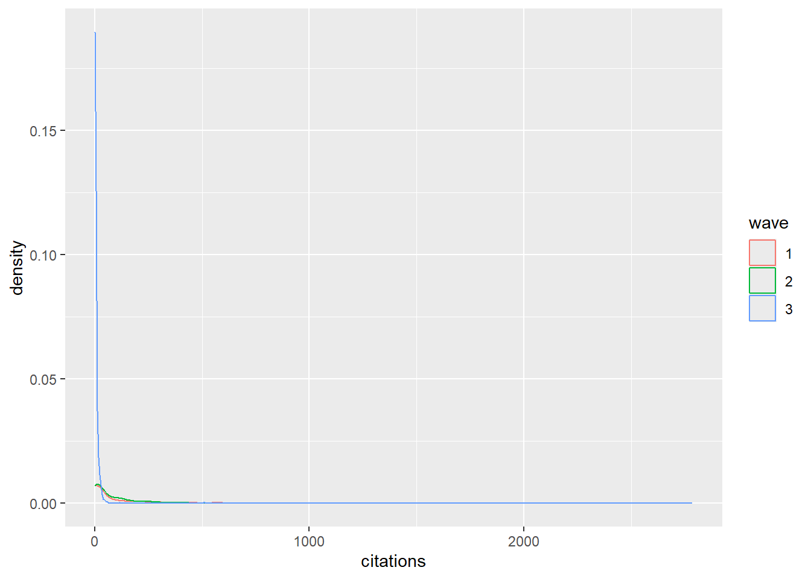
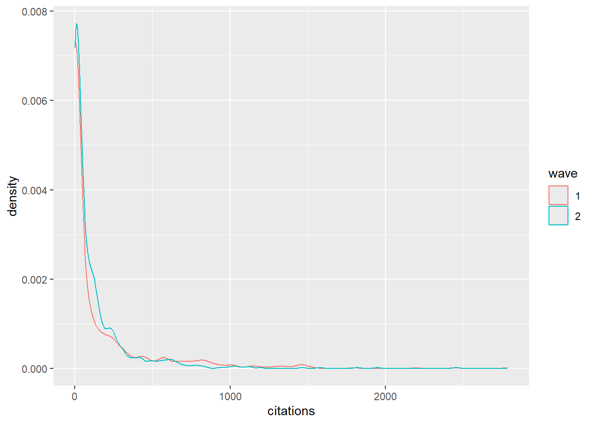
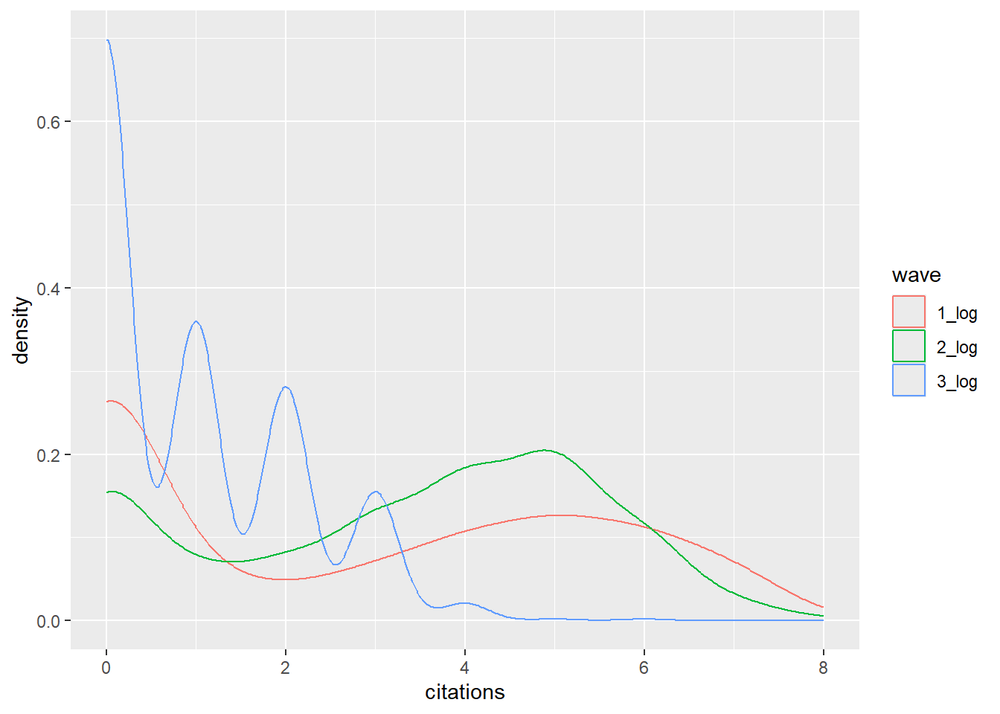
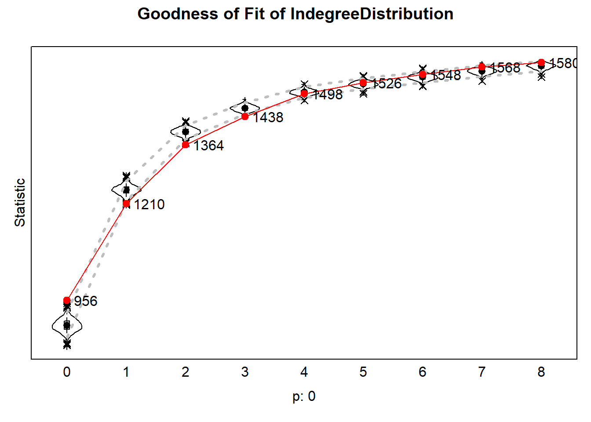
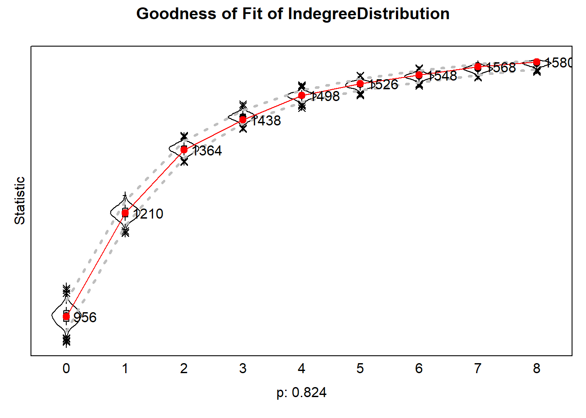

In 1968, Merton introduced the term the “Matthew Effect”. This refers to the idea that previous success increases the chance at success in the future, thereby increasing inequality (Merton, 1968). It has been well-established that this self-reinforcing process also applies to the academic world (Bol et al., 2018). Scientists that receive recognition in the beginning of their career are more successful later in their career. Research has shown how the structure of networks can contribute to this effect (Hancean & Perc, 2016). Successful researchers are more visible and therefore gain more opportunities for collaborations with other researchers and the associated benefits of more resources and publications and citations.
The idea of homophily might also play a role in this process of cumulative advantage. Homophily refers to the larger likelihood of observing a positive relationship between two people who are similar (McPherson et al., 2001). This can be the result of selection, meaning that there is a preference to connect with people that are similar. This process can contribute to the Matthew effect, because successful people form ties mostly with other successful people, with the result that the successful become segregated from less successful and that resources are concentrated among a select group (Hâncean & Perc, 2016). Other mechanisms for the phenomenon of homophily is influence, where two people form a tie and as a result become similar by influencing each other, and social context, where a shared social context is the reason two people are more similar and more likely to interact (Tolsma & Hofstra, 2024).
In the world of academic research, the principle of homophily is also observed. For example, we see that researchers with greater physical proximity or the same gender are more likely to collaborate (Horta et al., 2022). It has also been shown that the personal ties of scientists are structured by their status and position (McPherson et al., 2001). However, to my knowledge there has been no research about the homophily in terms of position/academic rank specifically in academic collaboration networks. Researchers in academia can hold different positions with a different amount of status, ranging from PhD student to full professor, and they might prefer to work with those who hold a similar position. Alternatively, research collaboration might consist mostly of researchers of different positions. This brings us to the first research question of this project:
RQ1: To what degree is there homophily in terms of position/academic rank in publication collaborations between social science researchers in the Netherlands?
In light of the Matthew effect and the possible homophily principle in collaboration networks, the question is raised of what the consequences of this structure are. What are the different effects of working together with people of different positions? In other areas of social life it has been well-demonstrated how one’s social network and the associated resources can be extremely valuable (Granovetter, 1973). Similarly, working with people that occupy a high position in the academic world might be a valuable resource for social scientists. Although the effect of alter’s citations on ego citations has been studied (Hâncean & Perc, 2016), not much research has been done on how working with researchers of a certain position influence one’s success in academia. A common way to measure success in academia is through acquiring citations (Wouters, 2014). This is why the second research question is as follows:
RQ2: How does the composition of a researcher’s egonet in terms of position/academic rank influence a researcher’s citations?
Homophily is a very well-established principle in social science where two people who have a tie are more likely to be similar than two random people (McPherson et al., 2001). As mentioned in the introduction, homophily can take place as the result of selection, influence and social context. In this case, we suspect that selection is the most relevant mechanism, since someone’s academic position does not change very easily and the social context within social science researchers is already very similar. When it comes to selection and why researchers would prefer to work with researchers that occupy a similar position, there are a few possible reasons. McPherson et al. (2001) explain how the psychological literature has demonstrated that perceived similarity increases attraction to others. A more sociological reason states that people who are more similar are more likely to share certain knowledge and cultural tastes, which makes communication and interaction smoother (McPherson et al., 2001). It is likely that this also plays a role in collaboration networks. When two researchers have a similar position, they likely have similar knowledge, skills and experience. This should make it easier to communicate and collaborate. Existing literature shows that within the workplace, including among scientists, ties are formed based on status and position of the employees (McPherson et al., 2001). When it comes to collaboration networks specifically, homophily has been observed in terms of geographical proximity and gender (Horta et al. 2022), but not yet when it comes to position. Based on the above, we expect the following:
Hypothesis 1: Dutch social science researchers are more likely to collaborate with researchers who occupy a similar position/have a similar academic rank.
Next we examine what the consequences are of this possible homophily structure. To do this, we use the concept of social capital, referring to “the aggregate of the actual or potential resources which are linked to possession of a durable network of more or less institutionalized relationships of mutual acquaintance and recognition” (Bourdieu, 1986). In other words, people in one’s network provide resources which can help actors. This also goes for collaboration networks. Through collaboration, researchers get access to knowledge and expertise from the other authors, for example (Li et al., 2013). Furthermore, collaboration can provide a researcher with increased recognition and credibility (Whitley, 2000). These resources can subsequently help them to achieve academic success in the future. Achieving a higher, more senior position in a university signifies an elevated level of knowledge and expertise (Finnegan & Hyle, 2009). Collaborating with someone of a higher position would then give a researcher access more and better resources. Moreover, since full professors often enjoy more prestige and have more influence, working with someone in a higher position is likely more beneficial in terms of future recognition and credibility. Therefore it is no surprise that junior researcher who collaborate with highly-cited researchers have more success in their future career (Li et al., 2019). Based on the arguments above, our second hypothesis is as follows:
Hypothesis 2: Dutch social science researchers who work with researchers who occupy higher positions acquire more citations in the future.
The hypotheses were tested using data on sociology and political science researchers in 8 Dutch universities (n=794). Data on these scholars were collected in three waves, in 2022, 2024 and 2025. These scholars are connected to each other in a network where the scholars are the nodes and the ties between them are defined by having worked together on a published paper. The network data consists of 3 waves: 2015-2018, 2019-2023 and 2024-2025. In this project, an undirected network was used. This was chosen because publishing a paper is something which involves active commitment from all authors. Therefore the relation is reciprocal by nature, leading to an undirected network. To the existing data I appended the number of citations of the papers that were published during each wave. This was done by scraping OpenAlex for all the papers of each author in the data using the ‘openalexR’ package.
The dependent variable for testing the first hypothesis about homophily is the formation of ties between scholars. To test the second hypothesis our dependent variable is a behavioral variable, namely the author’s citations of the paper during a specific wave. The main independent variables are alters’ similarity in terms of position/academic rank and alters’ position itself. First the data will be analysed descriptively by looking at some network statistics and the network graphs for each wave. After that the hypotheses will be tested with a Stochastic Actor Orientated Model (SAOM) using the R package ‘RSiena’.
Below you can see all the code used to collect and wrangle the relevant data.
#start clean
rm(list=ls())#Custom functions
fpackage.check <- function(packages) {
lapply(packages, FUN = function(x) {
if (!require(x, character.only = TRUE)) {
install.packages(x, dependencies = TRUE)
library(x, character.only = TRUE)
}
})
}
fsave <- function(x, file = NULL, location = "./data/processed/") {
ifelse(!dir.exists("data"), dir.create("data"), FALSE)
ifelse(!dir.exists("data/processed"), dir.create("data/processed"), FALSE)
if (is.null(file))
file = deparse(substitute(x))
datename <- substr(gsub("[:-]", "", Sys.time()), 1, 8)
totalname <- paste(location, datename, file, ".rda", sep = "")
save(x, file = totalname) #need to fix if file is reloaded as input name, not as x.
}
fload <- function(filename) {
load(filename)
get(ls()[ls() != "filename"])
}
fshowdf <- function(x, ...) {
knitr::kable(x, digits = 2, "html", ...) %>%
kableExtra::kable_styling(bootstrap_options = c("striped", "hover")) %>%
kableExtra::scroll_box(width = "100%", height = "300px")
}#fcolnet function by Jos
fcolnet = function(data = scholars, university = c("RU", 'UU'), discipline = "Sociologie", waves = list(c(2015,
2018), c(2019, 2023), c(2024, 2025)), type = c("first")) {
university = paste0('(', paste0(university, collapse='|' ), ')')
discipline = paste0('(', paste0(discipline, collapse='|' ), ')')
# step 1
demographics = data$demographics
sample = which(
(str_detect(demographics$universiteit.22, university)
| str_detect(demographics$universiteit.24, university)
| str_detect(demographics$universiteit.25, university)
) & (
str_detect(demographics$discipline.22, discipline)
| str_detect(demographics$discipline.24, discipline)
| str_detect(demographics$discipline.25, discipline)
) |> replace_na(FALSE))
demographics_soc = demographics[sample, ] |> drop_na(id)
# step 2
ids = demographics_soc$id |> unique()
scholars_sel = list()
for (id_ in ids){
scholars_sel[[id_]] = bind_rows(scholars$works) |>
filter(author_id == id_)
}
scholars_sel = bind_rows(scholars$works)
nwaves = length(waves)
nets = array(0, dim = c(nwaves, length(ids), length(ids)), dimnames = list(wave = 1:nwaves, ids,
ids))
dimnames(nets)
# step 3
df_works = tibble(
works_id = scholars_sel$id,
works_author = scholars_sel$authorships,
works_year = scholars_sel$publication_year
)
df_works = df_works[!duplicated(df_works), ]
# step 4
if (type == "first") {
for (j in 1:length(waves)) {
df_works_w = df_works[df_works$works_year >= waves[[j]][1] & df_works$works_year <= waves[[j]][2],
]
for (i in 1:nrow(df_works_w)) {
ego = df_works_w$works_author[i][[1]]$id[1]
alters = df_works_w$works_author[i][[1]]$id[-1]
if (sum(ids %in% ego) > 0 & sum(ids %in% alters) > 0) {
nets[j, which(ids %in% ego), which(ids %in% alters)] = 1
}
}
}
}
if (type == "last") {
for (j in 1:length(waves)) {
df_works_w = df_works[df_works$works_year >= waves[[j]][1] & df_works$works_year <= waves[[j]][2],
]
for (i in 1:nrow(df_works_w)) {
ego = rev(df_works_w$works_author[i][[1]]$id[1])
alters = rev(df_works_w$works_author[i][[1]]$id[-1])
if (sum(ids %in% ego) > 0 & sum(ids %in% alters) > 0) {
nets[j, which(ids %in% ego), which(ids %in% alters)] = 1
}
}
}
}
if (type == "all") {
for (j in 1:length(waves)) {
df_works_w = df_works[df_works$works_year >= waves[[j]][1] & df_works$works_year <= waves[[j]][2],
]
for (i in 1:nrow(df_works_w)) {
egos = df_works_w$works_author[i][[1]]$id
if (sum(ids %in% egos) > 0) {
nets[j, which(ids %in% egos), which(ids %in% egos)] = 1
}
}
diag(nets[j,,]) = 0
}
}
output = list()
output$data = demographics_soc
output$nets = nets
return(output)
}#Necessary packages
packages = c("RSiena", "tidyverse", "igraph", "openalexR")
fpackage.check(packages)## Loading required package: RSiena## Loading required package: tidyverse## ── Attaching core tidyverse packages ────────────────────── tidyverse 2.0.0 ──
## ✔ dplyr 1.1.4 ✔ readr 2.1.5
## ✔ forcats 1.0.0 ✔ stringr 1.5.1
## ✔ ggplot2 4.0.0 ✔ tibble 3.3.0
## ✔ lubridate 1.9.4 ✔ tidyr 1.3.1
## ✔ purrr 1.1.0
## ── Conflicts ──────────────────────────────────────── tidyverse_conflicts() ──
## ✖ dplyr::filter() masks stats::filter()
## ✖ dplyr::lag() masks stats::lag()
## ℹ Use the conflicted package (<http://conflicted.r-lib.org/>) to force all conflicts to become errors
## Loading required package: igraph
##
##
## Attaching package: 'igraph'
##
##
## The following objects are masked from 'package:lubridate':
##
## %--%, union
##
##
## The following objects are masked from 'package:dplyr':
##
## as_data_frame, groups, union
##
##
## The following objects are masked from 'package:purrr':
##
## compose, simplify
##
##
## The following object is masked from 'package:tidyr':
##
## crossing
##
##
## The following object is masked from 'package:tibble':
##
## as_data_frame
##
##
## The following objects are masked from 'package:stats':
##
## decompose, spectrum
##
##
## The following object is masked from 'package:base':
##
## union
##
##
## Loading required package: openalexR
##
## openalexR v2.0.0 introduces breaking changes.
## See NEWS.md for details.
##
## To suppress this message, add `openalexR.message = suppressed` to your .Renviron file.## [[1]]
## NULL
##
## [[2]]
## NULL
##
## [[3]]
## NULL
##
## [[4]]
## NULL#Collect network data
scholars <- fload('data/processed/20251017scholars.Rda')
scholars_data <- fcolnet(scholars,
university = c("RU", "UU", "RUG", "UvA", "VU", "EUR", "Leiden", "UvT"),
discipline = c("Sociologie","Politicologie"),
waves = list(c(2015, 2018), c(2019, 2023), c(2024, 2025)),
type = c("all")
)
df_ego <- bind_rows(scholars_data$data)# Scraping the # of citations of all papers published during a wave
mail = "kalle.stoffers@ru.nl"
#empty list
citations_per_wave <- list()
for (author in df_ego$id[1:794]) {
#fetch papers per authors
papers <- oa_fetch(
entity = "works",
author.id = author,
mailto = mail)
# check if papers is NULL or has 0 rows
if (is.null(papers) || nrow(papers) == 0) {
# fill with 0 citations for both waves
citations <- tibble(
id = author,
citations_w1 = 0,
citations_w2 = 0,
citations_w3 = 0
)
} else {
# wave 1 citations
citations_w1 <- papers |>
filter(publication_year >= 2015 & publication_year <= 2018) |>
summarise(citations_w1 = sum(cited_by_count, na.rm = TRUE))
# wave 2 citations
citations_w2 <- papers |>
filter(publication_year >= 2019 & publication_year <= 2023) |>
summarise(citations_w2 = sum(cited_by_count, na.rm = TRUE))
# wave 3 citations
citations_w3 <- papers |>
filter(publication_year >= 2024 & publication_year <= 2025) |>
summarise(citations_w3 = sum(cited_by_count, na.rm = TRUE))
# handle case where one of the summaries might return 0 rows
if (nrow(citations_w1) == 0) citations_w1 <- tibble(citations_w1 = 0)
if (nrow(citations_w2) == 0) citations_w2 <- tibble(citations_w2 = 0)
if (nrow(citations_w3) == 0) citations_w3 <- tibble(citations_w3 = 0)
#join the two
citations <- bind_cols(citations_w1, citations_w2, citations_w3) |>
mutate(id = author) |>
relocate(id)
}
citations_per_wave[[author]] <- citations
}
#merge met originele dataset
citations_df <- bind_rows(citations_per_wave)
df_scraped <- left_join(df_ego, citations_df, by = "id")
fsave(df_scraped)#make position variable numeric
df_scraped <- fload('data/processed/20251023df_scraped.rda')
table(df_scraped$functie.22, useNA = "always")##
## Assistant Professor Associate Professor Full Professor
## 134 87 115
## Lecturer PhD Candidate Postdoctoral Researcher
## 44 171 19
## Researcher Staff <NA>
## 42 6 176df_scraped <- df_scraped |>
mutate(position_level_22 =
case_when(
functie.22 %in% "Full Professor" ~ 6,
functie.22 %in% "Associate Professor" ~ 5,
functie.22 %in% "Assistant Professor" ~ 4,
functie.22 %in% "Lecturer" ~ 3,
functie.22 %in% "Researcher" ~ 3,
functie.22 %in% "Postdoctoral Researcher" ~ 2,
functie.22 %in% "PhD Candidate" ~ 1
)
)
df_scraped <- df_scraped |>
mutate(position_level_24 =
case_when(
functie.24 %in% "Full Professor" ~ 6,
functie.24 %in% "Associate Professor" ~ 5,
functie.24 %in% "Assistant Professor" ~ 4,
functie.24 %in% "Lecturer" ~ 3,
functie.24 %in% "Researcher" ~ 3,
functie.24 %in% "Postdoctoral Researcher" ~ 2,
functie.24 %in% "PhD Candidate" ~ 1
)
)
df_scraped <- df_scraped |>
mutate(position_level_25 =
case_when(
functie.25 %in% "Full Professor" ~ 6,
functie.25 %in% "Associate Professor" ~ 5,
functie.25 %in% "Assistant Professor" ~ 4,
functie.25 %in% "Lecturer" ~ 3,
functie.25 %in% "Researcher" ~ 3,
functie.25 %in% "Postdoctoral Researcher" ~ 2,
functie.25 %in% "PhD Candidate" ~ 1
)
)
table(df_scraped$functie.25, useNA = "always")##
## Assistant Professor Associate Professor Full Professor
## 136 85 100
## Lecturer PhD Candidate Postdoctoral Researcher
## 31 88 23
## Researcher Staff <NA>
## 22 9 300table(df_scraped$position_level_25, useNA = "always")##
## 1 2 3 4 5 6 <NA>
## 88 23 53 136 85 100 309wave1 <- scholars_data$nets[1,,]
wave2 <- scholars_data$nets[3,,]
wave3 <- scholars_data$nets[3,,]## some checks
dim(wave1)## [1] 794 794dim(wave2)## [1] 794 794dim(wave3)## [1] 794 794#check for missings, should be 0
sum(is.na(wave1))## [1] 0sum(is.na(wave2))## [1] 0sum(is.na(wave3))## [1] 0#check if diagonal is 0
sum(diag(wave1)==0)## [1] 794sum(diag(wave2)==0)## [1] 794sum(diag(wave3)==0)## [1] 794#only 1s and 0s
sum(wave1>1)## [1] 0sum(wave2>1)## [1] 0sum(wave3>1)## [1] 0#at least some 1s
sum(wave1>0)## [1] 804sum(wave2>0)## [1] 816sum(wave3>0)## [1] 816Before we run an RSiena model, we will inspect the data and network descriptively. First we will look at the network graphs of each wave, and then we will numerically inspect out network and out dependent variable citations. In the graphs below, the colors represent the different Dutch universities and the shapes represent the two disciplines, with circles for sociology and squares for political science. For more clarity in the plot, the isolates (researchers with no existing collaborations) were removed for the visualizations.
In these plots we can clearly see a pattern where most researches are clustered around a few central nodes who have many ties. This could be related to the principle of preferential attachment, where those who already have many ties accumulate even more. What we also notice is that there is strong clustering in terms of discipline and university. Most collaboration networks seem to remain within the same university and the same discipline.
# plot wave 1
g1 <- graph_from_adjacency_matrix(wave1, mode = "undirected", diag = FALSE)
uni_colors <- c("RU" = "red",
"UU" = "yellow",
"RUG" = "orange",
"UvA" = "gray28",
"VU" = "cyan",
"EUR" = "green",
"Leiden" = "blue",
"UvT" = "brown")
discipline_shapes <- c("Sociologie" = "circle",
"Politicologie" = "square")
V(g1)$color <- uni_colors[df_scraped$universiteit.22]
V(g1)$color[is.na(V(g1)$color)] <- "gray"
V(g1)$shape <- discipline_shapes[df_scraped$discipline.22]
V(g1)$shape[is.na(V(g1)$shape)] <- "none"
#delete isolates for clearer plot
isolates <- which(degree(g1) == 0)
g1_no_iso <- delete_vertices(g1, isolates)
#layout
layout_g <- layout_with_fr(g1_no_iso)
plot(g1_no_iso,
layout = layout_g,
vertex.label = NA,
vertex.size = 5)
#plot wave 2
g2 <- graph_from_adjacency_matrix(wave2, mode = "undirected", diag = FALSE)
uni_colors <- c("RU" = "red",
"UU" = "yellow",
"RUG" = "orange",
"UvA" = "gray28",
"VU" = "cyan",
"EUR" = "green",
"Leiden" = "blue",
"UvT" = "brown")
discipline_shapes <- c("Sociologie" = "circle",
"Politicologie" = "square")
V(g2)$color <- uni_colors[df_scraped$universiteit.24]
V(g2)$color[is.na(V(g2)$color)] <- "lightgray"
V(g2)$shape <- discipline_shapes[df_scraped$discipline.24]
V(g2)$shape[is.na(V(g2)$shape)] <- "none"
#delete isolates for clearer plot
isolates <- which(degree(g2) == 0)
g2_no_iso <- delete_vertices(g2, isolates)
#layout
layout_g <- layout_with_fr(g2_no_iso)
plot(g2_no_iso,
layout = layout_g,
vertex.label = NA,
vertex.size = 5)
#wave 3 plot
g3 <- graph_from_adjacency_matrix(wave3, mode = "undirected", diag = FALSE)
uni_colors <- c("RU" = "red",
"UU" = "yellow",
"RUG" = "orange",
"UvA" = "gray28",
"VU" = "cyan",
"EUR" = "green",
"Leiden" = "blue",
"UvT" = "brown")
discipline_shapes <- c("Sociologie" = "circle",
"Politicologie" = "square")
V(g3)$color <- uni_colors[df_scraped$universiteit.24]
V(g3)$color[is.na(V(g3)$color)] <- "lightgray"
V(g3)$shape <- discipline_shapes[df_scraped$discipline.24]
V(g3)$shape[is.na(V(g3)$shape)] <- "none"
#delete isolates for clearer plot
isolates <- which(degree(g3) == 0)
g3_no_iso <- delete_vertices(g3, isolates)
#layout
layout_g <- layout_with_fr(g3_no_iso)
plot(g3_no_iso,
layout = layout_g,
vertex.label = NA,
vertex.size = 5)
Next we look at the descriptive statistics of our network. The density, defined as the number of ties divided by the number of possible ties, is fairly low at around 0.0013 and similar in all three waves. Looking at the degree distributions, we notice that they are very skewed, where many researchers have few ties and few researchers have many ties. This corresponds to the structure we saw in the network graphs. The average number of ties lies around 1 tie. The transitivity in all three waves is around 0.30, meaning that roughly a third of all possible transitive triads are closed. As we have an undirected network, the transitivity and the clustering coefficient are the same.
#descriptives wave 1
#density
density <- edge_density(g1)
density## [1] 0.001276916#degree centrality
table(degree(g1))##
## 0 1 2 3 4 5 6 7 8 9 10 11 12 13 14
## 539 91 54 28 27 15 12 7 5 3 4 4 1 2 2mean(degree(g1, mode = "all"))## [1] 1.012594#transitivity/clustering
transitivity(g1, type = "undirected")## [1] 0.265719#Wave 2 descriptives
#density
density <- edge_density(g2)
density## [1] 0.001295975#degree centrality
table(degree(g2))##
## 0 1 2 3 4 5 6 7 8 10 11 14 15
## 478 127 77 37 30 14 11 10 6 1 1 1 1mean(degree(g2, mode = "all"))## [1] 1.027708#transitivity/clustering
transitivity(g2, type = "undirected")## [1] 0.3229399#Wave 3 descriptives
#density
density <- edge_density(g3)
density## [1] 0.001295975#degree centrality
table(degree(g3))##
## 0 1 2 3 4 5 6 7 8 10 11 14 15
## 478 127 77 37 30 14 11 10 6 1 1 1 1mean(degree(g3, mode = "all"))## [1] 1.027708#transitivity/clustering
transitivity(g3, type = "undirected")## [1] 0.3229399Finally, we inspect our dependent behavorial variable, number of citations. When we look at the distribution, the first thing that stands out is that, just like the number of degrees, the distribution is extremely skewed. the vast majority of researchers have zero of very few citations, while a small group of researchers have thousands. Since Siena uses mini-steps of 1 to simulate the evolution of behavior and since the range of the citations is very large, the model would take too long to converge. Therefore we need to first transform the citations variable. In this case we use a log transformation to decrease the range of the citation variable. We also notice that the third wave has much lower citations scores than the first two waves. This makes sense because we look at the citations of the paper published during the wave itself. The third waves runs from 2024 to 2025, which means there has been little time for other papers get published and cite the papers by the researchers in our dataset.
#descriptives citations
summary (df_scraped$citations_w1)## Min. 1st Qu. Median Mean 3rd Qu. Max.
## 0.0 0.0 13.5 165.2 177.0 2786.0summary (df_scraped$citations_w2)## Min. 1st Qu. Median Mean 3rd Qu. Max.
## 0.0 4.0 40.0 123.8 139.8 2458.0summary (df_scraped$citations_w3)## Min. 1st Qu. Median Mean 3rd Qu. Max.
## 0.000 0.000 1.000 5.019 5.000 509.000df_long <- df_scraped |>
pivot_longer(cols = c(citations_w1, citations_w2, citations_w3),
names_to = "wave",
names_prefix = "citations_w",
values_to = "citations") |>
mutate(wave = as.factor(wave))
ggplot(df_long, aes(x = citations, color = wave)) + geom_density()
#without wave 3 which distorts the graph
df_long2 <- df_scraped |>
pivot_longer(cols = c(citations_w1, citations_w2),
names_to = "wave",
names_prefix = "citations_w",
values_to = "citations") |>
mutate(wave = as.factor(wave))
ggplot(df_long2, aes(x = citations, color = wave)) + geom_density()
#transform citations
df_scraped$citations_w1_log <- round(log1p(df_scraped$citations_w1))
df_scraped$citations_w2_log <- round(log1p(df_scraped$citations_w2))
df_scraped$citations_w3_log <- round(log1p(df_scraped$citations_w3))
summary (df_scraped$citations_w1_log)## Min. 1st Qu. Median Mean 3rd Qu. Max.
## 0.000 0.000 3.000 2.729 5.000 8.000summary (df_scraped$citations_w2_log)## Min. 1st Qu. Median Mean 3rd Qu. Max.
## 0.000 2.000 4.000 3.315 5.000 8.000summary (df_scraped$citations_w3_log)## Min. 1st Qu. Median Mean 3rd Qu. Max.
## 0.0000 0.0000 1.0000 0.9824 2.0000 6.0000df_long3 <- df_scraped |>
pivot_longer(cols = c(citations_w1_log, citations_w2_log, citations_w3_log),
names_to = "wave",
names_prefix = "citations_w",
values_to = "citations") |>
mutate(wave = as.factor(wave))
ggplot(df_long3, aes(x = citations, color = wave)) + geom_density()
After descriptively looking at the data, we will estimate a model in RSiena to test our hypotheses. We use modelType = 3 to estimate the model. This model assumes that one actor takes the initiative to form or dissolve a tie, and the other actor has to confirm, except for dissolution (Ripley et al., 2025). In my opinion this logic most closely represents collaboration in the real academic world. To test for the homophily hypothesis, we test the effect of ‘simX’ with author’s position. This effect gives a higher value for ties where ego and alter are more similar in terms of their academic position. A tie between two professors is most similar, while a tie between a professor and a PhD student is most dissimilar. We control for outdegree activity and for triadic closure by using the ‘gwesp’ effect with a parameter of 69. Furthermore, preferences to collaborate with researcher of the same discipline and department to are also controlled for. Since there are very little changes across the years in university and discipline and the data from 2024 has the least amount of missing data we use the university and discipline data from 2024. To test the hypothesis on the effect of alters’ positions on ego’s citations, we use the effect ‘avXAlt’. This is the effect of the average position score of all alters. With the effect ‘effFrom’ we control for that researcher with a ‘higher’ position might have more citations.
## make necessary RSiena objects
#make array
nets <- array(data = c(wave1, wave2, wave3), dim = c(dim(wave1), 3))
## dependent
net <- sienaDependent(nets)
citations <- df_scraped |>
select(citations_w1_log, citations_w2_log, citations_w3_log) |>
as.matrix()
str(citations)
citation_dep <- sienaDependent(citations, type = "behavior")
str(citation_dep)
## independent
functie <- coCovar(df_scraped$position_level_24)
uni <- coCovar(as.numeric(as.factor(df_scraped$universiteit.24)))
disc <- coCovar(as.numeric(as.factor(df_scraped$discipline.24)))
mydata <- sienaDataCreate(net, citation_dep, functie, uni, disc)#Initial effects and look at data
myeff <- getEffects(mydata)
myeff
print01Report(mydata, modelname = "./results/scholars_final")##Specify model
myeff <- getEffects(mydata)
#basic structural elements
myeff <- includeEffects(myeff, gwesp, outAct)
#homophily based on position
myeff <- includeEffects(myeff, egoX, interaction1 = "functie")
myeff <- includeEffects(myeff, simX, interaction1 = "functie")
#control for same uni and discipline (gender?)
myeff <- includeEffects(myeff, sameX, interaction1 = "uni")
myeff <- includeEffects(myeff, sameX, interaction1 = "disc")
#behavioural effects:
myeff <- includeEffects(myeff, effFrom, interaction1 = "functie", name = "citation_dep")
myeff <- includeEffects(myeff, avXAlt, interaction1 = "functie", interaction2 = "net", name = "citation_dep")
myeff#Estimate model
myAlgorithm <- sienaAlgorithmCreate(projname = "scholars", modelType = c(net=3))
ans <- siena07(myAlgorithm, data = mydata, effects = myeff, returnDeps = TRUE)
fsave(ans)Before looking at the results of this model we should check whether the goodness of fit is adequate. To do this we compare the simulated networks to the observed network in terms of the indegree distribution. Based on the results of the goodness of fit analysis on the indegree distribution, we conclude that the number of people with 0 ties are underestimated while people with 1-3 ties are over estimated. To improve the goodness of fit we therefore add the effect ‘isolateNet’. This effect represents a “preference” for having zero ties.
#Goodness of fit
ans <- fload('data/processed/20251024ans.rda')
gof_indeg <- sienaGOF(ans, IndegreeDistribution, verbose = FALSE, join = TRUE, varName = "net")
plot(gof_indeg)
#Estimate model
myeff <- includeEffects(myeff, gwesp, outAct, isolateNet)
myAlgorithm <- sienaAlgorithmCreate(projname = "scholars", modelType = c(net=3))
ans2 <- siena07(myAlgorithm, data = mydata, effects = myeff, returnDeps = TRUE)
fsave(ans2)Now we run the model again with the ‘isolateNet’ effect added and check if the goodness of fit has improved. The results of this analysis show that the simulated networks match well with the observed network. This means that the goodness of fit is adequate and we can move on the interpreting the results of the model.
#Goodness of fit
ans2 <- fload('data/processed/20251027ans2.rda')
gof_indeg <- sienaGOF(ans2, IndegreeDistribution, verbose = FALSE, join = TRUE, varName = "net")
plot(gof_indeg)
When we look at the results of our RSiena model, we see that the degree parameter is -2.3001 and significant. This shows that there is a “preference” to not form ties compared to forming ties. This matches with the low density number we descriptively observed and makes sense, given our large network. Next, the ‘gwesp’ effect of 1.7659 is significant, meaning that there is a preference for triadic closure. Researchers prefer to collaborate with other researchers who have already worked with someone they have worked with. The outdegree activity effect is not significant. This means that researchers who had many ties in a previous waves, do not have a stronger “preference” to form ties than researchers with less ties in previous waves. This does not match with the idea of preferential attachment, discussed in the introduction. The network-isolate effect also is not significant, despite improving the goodness of fit of the model. There doesn’t seem to be a preference to lack any ties, i.e. to not publish with any other researchers. Next, the ‘egoX’ effect with position is also not significant, showing that researchers with a higher position do not form more ties. When we look at our main effect of interest, the effect of the similarity in terms of position, we see that there is a negative effect of similarity. This would suggest that researchers prefer to work with researcher who are dissimilar in their position. However, this effect is not significant. Therefore, we find no support for hypothesis 1. Finally, the positive effects of the same university and discipline represent the preference to collaborate with researchers of the same university and discipline. However, the p-values associated with the parameters and standard errors slightly exceeds the threshold of 0.05 (0.081 and .107 respectively). This contradicts the clustering by university and discipline we saw in the network graphs.
When looking at the behavioral dependent variable, the linear and quadratic shape effect are not significant. This shows that across waves, researchers’ citation behavior does not significantly change. This is in contrast with our descriptive analysis, where we saw that citation scores are a lot lower in the third wave. Next, we see that position also does not have a significant effect on citations, meaning that researchers who occupy a higher position do not have a tendency to get cited more often. Finally, the effect of alters’ position is positive, which suggests that collaborating with researcher with a higher position leads to more citations in the subsequent wave. However, the associated p-value of 0.073 falls just outside of significance. Therefore we cannot confirm hypothesis 2.
ans2## Estimates, standard errors and convergence t-ratios
##
## Estimate Standard Convergence
## Error t-ratio
## Network Dynamics
## 1. rate constant net rate (period 1) 42.5121 ( 3.7381 ) -0.0658
## 2. rate constant net rate (period 2) 0.1000 ( NA ) 0.0000
## 3. eval degree (density) -2.3001 ( 1.1192 ) -0.0259
## 4. eval GWESP (69) 1.7659 ( 0.5021 ) 0.0365
## 5. eval degree of ego -0.0871 ( 0.0576 ) 0.0067
## 6. eval network-isolate 3.4152 ( 5.7617 ) 0.0781
## 7. eval functie ego 0.0801 ( 0.1093 ) 0.0971
## 8. eval functie similarity -0.6645 ( 0.5931 ) 0.0570
## 9. eval same uni 0.5694 ( 0.3272 ) -0.0038
## 10. eval same disc 0.5717 ( 0.3546 ) -0.0106
##
## Behavior Dynamics
## 11. rate rate citation_dep (period 1) 7.4100 ( 2.1294 ) 0.0139
## 12. rate rate citation_dep (period 2) 30.9598 ( 40.7211 ) -0.0264
## 13. eval citation_dep linear shape -0.2731 ( 0.1873 ) -0.0420
## 14. eval citation_dep quadratic shape -0.0006 ( 0.0489 ) -0.0605
## 15. eval citation_dep: effect from functie -0.0081 ( 0.0146 ) -0.0163
## 16. eval citation_dep: alter's (net) functie average 0.0290 ( 0.0162 ) -0.0545
##
## Overall maximum convergence ratio: 0.1720
##
##
## Model Type:
## net : Initiative model
##
##
## Total of 3987 iteration steps.This project had to aim to investigate the role researchers’ position/academic rank plays in structuring collaboration networks and their citation scores. Specifically, we were interested in the degree of homohphily in terms of position and how the position of one’s egonet impact their academic success. We tested our hypothesis using an RSiena model using data on 794 sociology and political science researchers from 8 Dutch universities.
We found no confirmation for our hypothesis predicting position homophily. A possible explanation for this is that collaborating with different positions might be more efficient in terms of division of labor and money. Researchers with different positions have a slightly different skillset and different knowledge, which means that the researchers can contribute in a different way to a paper or project. Furthermore, since researcher of higher positions have a higher salary, it is cheaper to have some of the work in a project be done by researchers from a lower level. If this “division of labor” effect exists next to a preference to work with similar positions, this could explain why we found no effect at all.
We also did not find support for the second hypothesis about the influence of working with people who occupy a high position. A possible explanation for not finding this effect is that the time between the waves is too short for the acquired resources during the collaboration to manifest themselves in increased academic success in the form of more citations. An alternative explanation is that it is not the average position of one’s network which influences resources and future success, but rather the total number of researchers of a certain position in one’s network. This might better represent the resources that are present in a researcher’s network. Based on our results, however, we have to conclude that network properties related to researchers’ position do not contribute to the Matthew effect in academics.
It is important to mention this project had several limitations. The first regards the dependent behavorial variable: the number of citations. We analysed the number of citations of the papers published during the years of each wave. However, as became apparent when looking at the mean number of citations of the third wave, it takes a certain amount of time for a paper to get recognised and for new papers to be published, citing the paper. Therefore, the citations of the papers of that wave might not properly reflect the academic success during that wave. Perhaps it would have been better to count the citations of the papers of a few years prior to the wave. To add to that, the number of citations is not a perfect measure of academic success (Bornmann, 2016). Furthermore, to get the RSiena model to converge we had to transform the citation variable, losing information in the process. Since recently, it is also possible to use a continuous behavorial variable in RSiena, but this is not yet integrated in the standard version of RSiena. This would have been preferable to transforming the citation data. Given the results and limitations of this project, future research could look into different ways of measuring the resources present in one’s network, as well as a different measurement for academic success. Future studies should aim to use a longer time frame and test our results in a different context.
Bol, T., De Vaan, M., & Van de Rijt, A. (2018). The Matthew effect in science funding. Proceedings Of The National Academy Of Sciences, 115(19), 4887–4890. https://doi.org/10.1073/pnas.1719557115
Bornmann, L. (2016). Measuring impact in research evaluations: a thorough discussion of methods for, effects of and problems with impact measurements. Higher Education, 73(5), 775–787. https://doi.org/10.1007/s10734-016-9995-x
Bourdieu, P. (1986). The forms of capital. In J. G. Richardson (Ed.), Handbook of theory and research for the sociology of education (pp. 241–258). Greenwood Press.
Finnegan, D. E., & Hyle, A. E. (2009). Assistant to “Full”: Rank and the Development of Expertise. Teachers College Record The Voice Of Scholarship in Education, 111(2), 443–479. https://doi.org/10.1177/016146810911100203
Hâncean, M., & Perc, M. (2016). Homophily in coauthorship networks of East European sociologists. Scientific Reports, 6(1). https://doi.org/10.1038/srep36152
Horta, H., Feng, S. & Santos, J.M. Homophily in higher education research: a perspective based on co-authorships. Scientometrics 127, 523–543 (2022). https://doi.org/10.1007/s11192-021-04227-z
Li, W., Aste, T., Caccioli, F., & Livan, G. (2019). Early coauthorship with top scientists predicts success in academic careers. Nature Communications, 10(1). https://doi.org/10.1038/s41467-019-13130-4
Li, E. Y., Liao, C. H., & Yen, H. R. (2013). Co-authorship networks and research impact: A social capital perspective. Research Policy, 42(9), 1515–1530. https://doi.org/10.1016/j.respol.2013.06.012
McPherson, M., Smith-Lovin, L., & Cook, J. M. (2001). Birds of a Feather: Homophily in Social Networks. Annual Review Of Sociology, 27(1), 415–444. https://doi.org/10.1146/annurev.soc.27.1.415
Merton, R. K. (1968). The Matthew effect in science. Science, 159(3810), 56–63. https://doi.org/10.1126/science.159.3810.56
Ripley, R. M., Snijders, T. A., Boda, Z., Vörös, A., & Preciado, P. (2025). Manual for RSIENA. University of Oxford, Department of Statistics. https://www.stats.ox.ac.uk/~snijders/siena/RSiena_Manual.pdf
Tolsma, J., & Hofstra, B. (2024). Social Network Analysis for Social Scientists. https://jochemtolsma.github.io/SNA-4-Social-Scientists
Wouters, P. (2014). The citation: From culture to infrastructure. In Beyond Bibliometrics: Harnessing Multidimensional Indicators of Scholarly Impact (pp. 47–66). MIT Press.